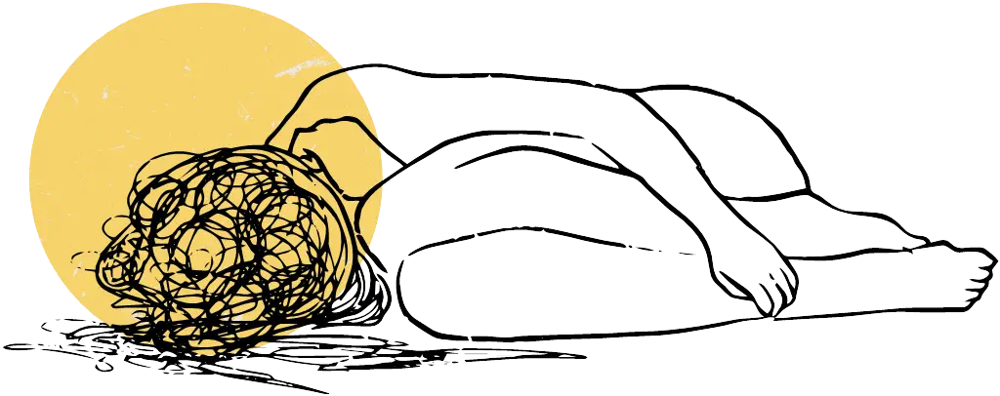

Psychische Folgen
Selbsthilfegruppe Freiburg: Ausstieg aus Hochkontrollgruppen
Zuletzt aktualisiert: Juni 2026
Ein Ausstieg aus religiösen Hochkontrollgruppen oder geistlich missbräuchlichen Gemeinschaften prägt Menschen oft lange. Hochkontrollgruppen – darunter fallen auch die Zeugen Jehovas – sind religiöse Organisationen, die das Leben ihrer Mitglieder weitreichend kontrollieren: soziale Kontakte, Informationszugang, Entscheidungen im Alltag. Wer diese Gemeinschaft verlässt oder zu zweifeln beginnt, verliert oft sein soziales Umfeld und seinen Halt. Wer eine Hochkontrollgruppe verlassen hat oder noch zögert, findet hier Muster, die vielleicht vertraut klingen. Nicht jeder erlebt das alles. Aber irgendetwas davon kennen die meisten.

Häufige Symptome
Ständige Alarmbereitschaft und Anspannung
Starke Selbstzweifel und das Gefühl, nie gut genug zu sein
Erschöpfung, Hoffnungslosigkeit und Antriebslosigkeit
Durch Kontaktverlust, Ausschluss oder Entfremdung
Das Gefühl, ohne die vertraute Gruppe nicht zu wissen, wer man ist
Schlafprobleme, psychosomatische Anspannung und Stressreaktionen
Gegenüber Menschen, Leitern, Gruppen und religiösen Angeboten
Durch Bibeltexte, Endzeit-Themen, Gebete oder religiöse Sprache
Herausforderungen mit Nähe, Vertrauen und gesunden Grenzen
Das Gefühl, Alltag, Werte und Lebensplanung neu lernen zu müssen
Im Glaubensbereich
Statt Vertrauen und Geborgenheit
Glauben wird mit Druck, Kontrolle oder Strafe verbunden
Schwierigkeiten mit Gebet, Bibellesen oder Gemeinschaft
Durch missbrauchte Bibelstellen oder angebliche geistliche Autorität
Unsicherheit, ob man den eigenen Gedanken trauen darf
Etwas erscheint nur ganz richtig oder ganz falsch
Starke Furcht, etwas Falsches oder Verbotenes zu tun
Die Tendenz, eigene Bedürfnisse permanent zurückzustellen
Zweifel an den eigenen Gefühlen und der eigenen Wahrnehmung
Gewohnheit, Autoritäten mehr zu vertrauen als dem eigenen Urteil
Probleme, Nein zu sagen und persönliche Grenzen zu setzen
Dauerndes Fragen „Ist das erlaubt? Ist das falsch? Bin ich schuldig?"
Sehnsucht nach Gott und gleichzeitig Angst vor religiösen Räumen
Wichtig
Diese Punkte sind keine Diagnose. Sie können aber Hinweise darauf sein, dass belastende religiöse Erfahrungen bis heute nachwirken und ernst genommen werden sollten.
Ähnliche Muster kennen auch Menschen, die andere kontrollierende Gemeinschaften verlassen haben – das beschränkt sich nicht auf die Zeugen Jehovas.
Akute Krise oder dringende Hilfe benötigt?
Wenn dir alles über den Kopf wächst, bist du nicht allein. Die Telefonseelsorge ist rund um die Uhr kostenfrei, anonym und vertraulich erreichbar:
Buchempfehlungen zum Thema „Religiöser Missbrauch”
Die zerstörende Kraft des geistlichen Missbrauchs
David Johnson / Jeff VanVonderen
Geistlicher Missbrauch: Auswege aus frommer Gewalt
Inge Tempelmann
Spiritueller Missbrauch in der katholischen Kirche
Doris Wagner u. a.
Selbstverlust und Gottentfremdung
Barbara Haslbeck / Ute Leimgruber u. a.
Häufige Fragen
Fragen & Antworten
Was sind häufige Symptome nach dem Ausstieg aus den Zeugen Jehovas?
Nach dem Ausstieg beginnt für viele eine zweite, innere Auseinandersetzung: Angst, Schuldgefühle, Einsamkeit, Identitätsfragen. Schlafprobleme und depressive Phasen sind keine Seltenheit. Manche merken, dass sie auf religiöse Sprache oder Bibeltexte anders reagieren als andere – mit Anspannung, nicht mit Ruhe. Das ist kein Zeichen von Schwäche, sondern eine Folge von dem, was war.
Welche Veränderungen im Glaubensbereich erleben Menschen nach dem Ausstieg?
Viele, die eine Hochkontrollgruppe verlassen, stehen vor einer merkwürdigen Spannung: Sie wollen mit Glauben nichts mehr zu tun haben, vermissen aber gleichzeitig etwas, das sie nicht benennen können. Angst vor Gott statt Vertrauen, Schwarz-Weiß-Denken, das Gefühl, den eigenen Gedanken nicht trauen zu dürfen. Das sind typische Nachwirkungen. Religiöse Räume fühlen sich nicht mehr sicher an, auch wenn man weiß, dass sie es sein könnten.
Wie lange dauern die psychischen Folgen eines Ausstiegs?
Das lässt sich nicht vorhersagen. Manche spüren nach wenigen Monaten, dass sich etwas löst. Andere tragen Muster wie Schwarz-Weiß-Denken oder tiefes Misstrauen noch Jahre mit sich. Was viele berichten: Es hilft, mit Menschen zu reden, die dasselbe kennen. Und manchmal hilft auch professionelle Begleitung, Dinge zu sortieren, die man allein nicht einordnen kann.
Wo finde ich Unterstützung nach dem Ausstieg aus den Zeugen Jehovas?
Füreinander Freiburg ist eine Selbsthilfegruppe für Menschen, die aus den Zeugen Jehovas ausgestiegen sind oder zweifeln – kostenlos, ohne Verpflichtung. Wer weitere Beratung sucht, findet Unterstützung bei ZEBRA BW und beim Selbsthilfebüro Freiburg. Für akute Krisen: Telefonseelsorge, kostenlos, rund um die Uhr – 0800 / 111 0 111.
Du bist nicht allein
Unsere Gruppe ist ein Ort, an dem du offen reden kannst, ohne erklären zu müssen, wer du warst. Wir freuen uns über jede Nachricht, egal ob du viele Fragen hast oder erst mal nur schauen möchtest.
Kontakt aufnehmen